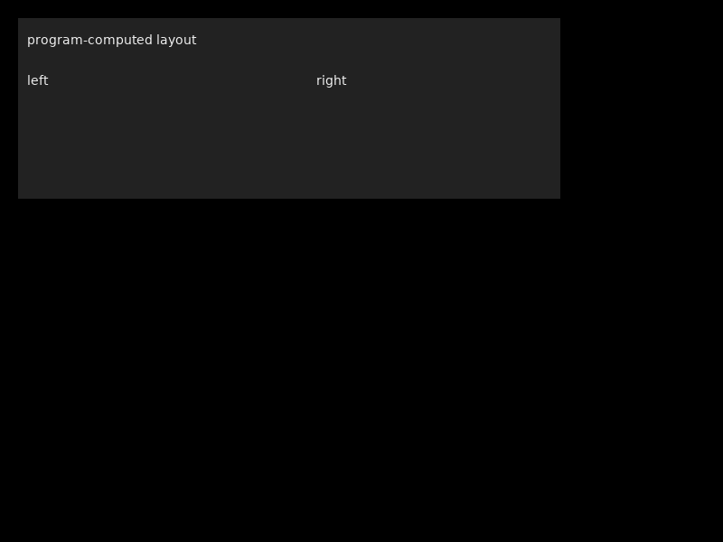
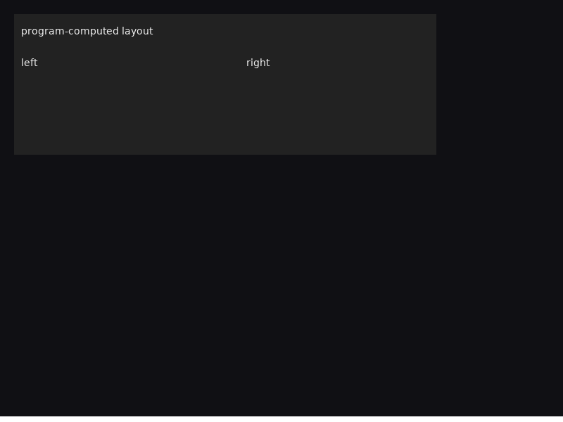
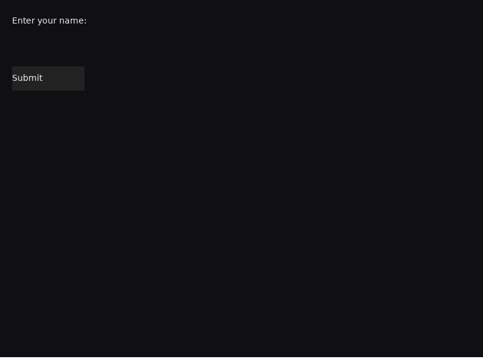

合成器真实运行 → kitty 图形 APC 输出捕获 → 解码回 PNG → 与渲染器直出像素对比
不依赖真 kitty 终端环境，而是捕获合成器的 stdout——那里就是要写进 kitty 终端的字节流——把 kitty 图形 APC 帧解码回 PNG，与渲染器直出的 ground-truth PNG 做像素级对比：
程序(container_demo) → PTY → 合成器 ─┬─ scene 渲染 → fb ─→ render_snapshot 直出 PNG（ground truth）
└─ output_kitty → kitty APC 序列 → stdout
↓ 捕获
kitty 帧解码 → PNG（round-trip）
ground truth vs round-trip → 逐像素对比
验证工具：tools/render_snapshot.c（直出 fb 的 ground-truth，与
container_demo 同一场景）+ /tmp/kitty_decode.py（APC 帧分组解码，
按 a=T 传输边界分组，取最后一次完整传输）。
| 现象 | 根因 | 修复 |
|---|---|---|
| kitty 画面里 BOX 区域没有文字 | 新协议 WGT_CREATE 重写时把 content 参数丢了——TEXT 元素生来为空 |
WM 补上：args[7] 存在即 set_element_content |
| 首帧全黑 / 比对 0% 匹配 | 解码脚本把所有传输的数据串接成一张图（343 帧叠成一坨）——
kitty 每次完整传输（a=T 头帧 + m 链）需独立解码 |
按 a=T 边界分组取最后一次传输（验证脚本修正，非产品代码 bug） |
| 10 秒灌出 1.2 GB 到终端 | raw RGBA（f=32）无压缩 2.5MB/帧 × 无节流 600fps 轮询循环 | 两层修复：f=100 PNG（25× 压缩）+ 30fps 呈现节流（KITTY_PRESENT_INTERVAL_MS） |
| TGS_FPS | 呈现节拍 | 实测 fps | 像素一致 |
|---|---|---|---|
| 60（默认） | 16.7ms | 59.8 | 100% |
| 120 | 8.3ms | 101-102 | 100% |
| 240 | 4.2ms | 102（编码器上限） | 100% |
编码器（系统 zlib 级 1）单测 136 帧/s（7.3ms/帧）；合成器 loop 开销把 实际推到 ~102fps。60Hz 精确命中；120Hz 档在参考硬件（Ryzen 7 5800H）达 85% 预算。 （以上为全帧路径的历史值——编码器天花板在任何门控下都撞 102；§6 为脏区 tile 路径的实测， 该天花板已被突破。）

render_snapshot 直出 fb（800×600 PNG）

compositor stdout → kitty APC 解码回 PNG

同一程序、同一画面——kitty 是 TGS 的无损呈现通道。
| 组件 | 职责 |
|---|---|
kitty_encode.c | ARGB → RGBA → PNG（系统 zlib 级 1，7.3ms/帧）→ base64 →
分块 APC（f=100,a=T,q=2,m 链式，4KB 块）。共享编码器。 |
output_kitty.c | output.h 实现：alt-screen 进出、光标归位、30fps 呈现节流、 kitty 帧写 stdout。 |
parser.c | APC 双识别：G1; 载荷 → TGS 帧；裸 G →
kitty 原生像素帧（超集兼容面，MUST NOT 进 TGS 解码器）。 |
| CMake | TGS_OUTPUT：kitty（默认/必须）| sdl（调试）| fb（嵌入式）；input 层永远构建。 |
TGS 帧: ESC _ G1;<stream>;<frame>;<command>;<args...> ESC \ kitty 原生: ESC _ Gf=100,a=T,q=2,m=1;<base64 PNG> ESC \ 字符流: 普通终端文本（term underlay）
可扩展性：命令编号空间稳定（退役值永久保留）；G1 内新命令不破坏旧版本； kitty 未知 key 静默忽略——超集不依赖 kitty 的扩展能力，合成器双识别即超集。
| 项 | 结果 |
|---|---|
| 测试 | 51/51 通过（9 套件：frame/protocol/term/pty/snapshot/l1/scene_click/kitty_dirty；49/49 → +2 来自脏区往返套件） |
| 实机验证 | kitty 帧捕获 + 解码 + 像素对比 100%（maxdiff=0） |
| 呈现带宽 | ~200 KB/s @ 30fps 上限（PNG f=100；raw RGBA 已禁用）→ 60/120Hz 由 TGS_FPS 节拍 |
| 提交 | 616fe5f 协议重写 · 7b0fc8f G1 前缀 · f86ac9b kitty 呈现 ·
f0964e1 往返验证 · 3a04d11 截图恢复 |
| spec | b94237f v2.0 规范重写（v1.0 归档） |
画布切成固定 64×64 px tile 网格（800×600 → 130 块），每块一个持久 kitty image id；
present 只重传与基线逐字节不同的 tile。选 tile 而非单块脏矩形：kitty 删除图像数据会连带删除
placement，只有不重叠的划分才既内存有界又 z 序安全。placement = CUP 到 cell + X/Y 像素偏移
（< cell），cell 几何取 TGS_CELL_W/H → TIOCGWINSZ → 全帧回退。
节拍：门控未到点的 present 睡到锚点再发（clock_nanosleep(TIMER_ABSTIME)），
不再丢弃——丢弃会把 present 摊到合成器迭代边界上（间隔 = ceil(门控/迭代T)×迭代T，
门控 120 实测只有 106.6fps）；睡眠精度几十 µs，间隔 = 门控 + 唤醒抖动，输入延迟 ≤ 一个门控。
| 场景 | 旧（未到点丢弃） | 新（锚点睡眠 + 重绘削减） |
|---|---|---|
| 局部脏区计数器 @120 | 101.8 fps · 109 KB/s | 123.7 fps · 133 KB/s |
| 无节流灌入 @120 | 98.1 fps · 112 KB/s | 123.8 fps · 140 KB/s |
| 全帧回退 @120 | 84.2 fps · 1.22 MB/s | 122.3 fps · 1.77 MB/s |
| 全屏翻页 @120（最坏脏区） | 71.7 fps · 1.56 MB/s | 109.9 fps · 2.37 MB/s |
| 局部脏区 @门控240 | 159.3 fps · 171 KB/s | 245.3 fps · 263 KB/s（上限 250） |
| 局部脏区 @门控60 | 56.4 fps | 62.2 fps（上限 62.5） |
| 空闲（画面不变） | 0 B/s · 2 帧 | 0 B/s · 2 帧 |
门控 60/240 命中 62.2/62.5 与 245.3/250——节拍已由锚点决定。重绘削减三件套： 字形缓存（(cp,fg)→SDL_Surface，确定性渲染 ⇒ 字节等同，全屏 3700 次 TTF 光栅化 → 几十次）、 DEF_BG 预填免边界逐像素调用、blend 的 /255 查表（同一 C 除法预填，商完全相同）—— 三者跨构建合成对比 480000/480000 maxdiff=0，像素未动。 诚实边界：全屏翻页 109.9fps 仍 <120，性质已变——是真实每帧工作量超预算 （present ≈9.1ms > 8ms：解析+全量重绘 ≈5.6ms + ~50 块脏 tile 编码 ≈3.5ms），不再是门控量化； 其余场景全部 ≥120。51/51 测试绿。
priv->fb 而非已发布的 d->buffer（scene 后端在
backend_init 重发布自己的 fb）→ 首帧全零；测试直画 d->buffer 所以全绿。output_resize 拿 d->width 比较，而 be->set_size()
已先更新了它 → resize 必然早退、旧网格盖新缓冲。blit_cp 只处理 1bpp 而 TTF_RenderUTF8_Blended 返回 32bpp →
字形渲染后被整体丢弃（文本网格快照测试对此盲——网格内容是对的）。另修 pty 捕获 harness 的 teardown 死锁：deadline 后子进程可能阻塞在满 pty 的 write 中途， SIGTERM+SA_RESTART 永不落地 → WNOHANG 排空 + 2s SIGKILL 升级。
接收侧补齐：裸 kitty 图形帧（a=t/T/p/d，f=100/32/24，
分块 base64，i= 64 槽）解码后像素直接落画布——字符底之上、
场景元素之下。双识别在 pty 两端落地：合成器 parser 按 G1;
分流，客户端库对非 TGS 的 APC 帧消费跳过。
X/Y 格内偏移
——图像 16 px + 周边 7 个底色探针全部精确（PIL 权威回放），
杂散字节 0，稳态 0 B/s（无重绘风暴）。render_snapshot ground truth：
120000/120000 = 100%，maxdiff=0——BOX 完整遮住图像，
「图像画在场景元素之下」以像素级证据钉死。Gi=7,OK）先于握手进入 pty
输入队列 → tgs_client 曾把非 G1; 帧当流错误，程序
握手即死（raw dump 尾部 client init failed，widget 全部缺席）。
双识别原先只做了 compositor 端——修复为客户端同款分流，并以
ClientInput 测试把该顺序钉进回归。term_resize_to() 重建 view 后
underlay 指针悬垂（从不重新 set_underlay）——补 repoint +
原生层标脏。已知缺口（spec §8.3 明示，违者按码表拒绝）：U=1 虚拟放置、 动画（a=A/a/f/c）、zlib、多放置 p>0、C=0 光标策略（从不移动 vterm 光标）、 放置与滚动解耦、BMP/GIF、部分 raw 传输、file/shm 目标；元素填充源仍 L4。 实现性边界：图像层随底色全量重放（暂无图像级脏区）；ACK 在程序不读输入时丢弃 （不阻塞循环）；拼装单流。